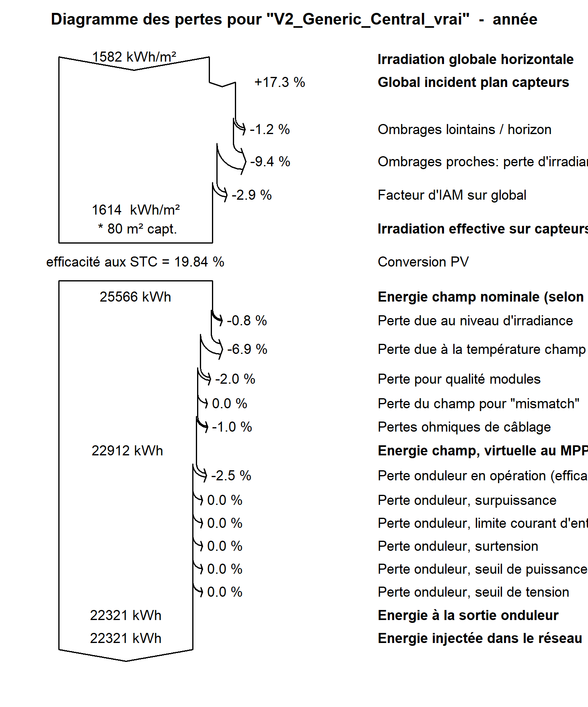

Étude photovoltaïque · toiture agricole à Carpentras
Dimensionnement PVsyst et étude d’ombrages pour toiture agricole.
Étude de cours sur une toiture agricole à Carpentras : quelle production peut-on attendre d’une installation photovoltaïque, et dans quelle mesure les ombrages et le profil de consommation changent-ils son intérêt ?

Pourquoi cette étude ?
La surface disponible ne suffit pas à estimer l’énergie réellement utile
Le travail pratique portait sur une ferme située à Carpentras, avec une toiture quasi orientée au sud, inclinée à 25° et d’environ 156 m². L’enjeu était de vérifier le dimensionnement envisageable, puis de comprendre comment l’horizon et les arbres proches influencent la production.
Une seconde question concernait l’usage de cette énergie : une installation bien dimensionnée ne garantit pas que sa production coïncide avec la consommation annuelle de 4 500 kWh prise comme référence.
Démarche
Comparer les masques solaires et les configurations électriques
J’ai modélisé le champ photovoltaïque et son environnement dans PVsyst, puis distingué les pertes d’irradiance dues aux ombres des pertes électriques associées au câblage des modules.
- Comparaison de configurations de 48 modules, de 14,4 à 15,8 kWc, avec différentes solutions de conversion.
- Modélisation de l’horizon et des arbres proches pour évaluer les masques solaires.
- Comparaison des pertes d’irradiance et des pertes électriques liées aux chaînes de modules.
- Confrontation de la production horaire à un profil de consommation annuel de 4 500 kWh.
Résultats notables
Les ombrages proches peuvent pénaliser davantage que l’horizon
Avec l’horizon lointain, la production simulée passe de 24,9 à 24,6 MWh/an, soit une baisse d’environ 1,2 %. Dans un autre scénario, avec onduleur central et ombrages proches, les pertes électriques liées aux chaînes de modules atteignent 31,8 % : une perte de production bien supérieure à la perte d’irradiance de 9,4 %.
Ces deux résultats correspondent à des configurations distinctes. Dans le scénario avec onduleur central, sur 14 949 kWh/an produits, 1 959 kWh sont consommés directement sur place. Cela correspond à 13,1 % d’autoconsommation de la production et à 43,5 % d’autoproduction des besoins annuels.
Livrables
Le rapport présente le dimensionnement, les variantes étudiées, les pertes simulées et l’analyse d’autoconsommation. Il peut être transmis sur demande par e-mail.
Demander le rapport par e-mail